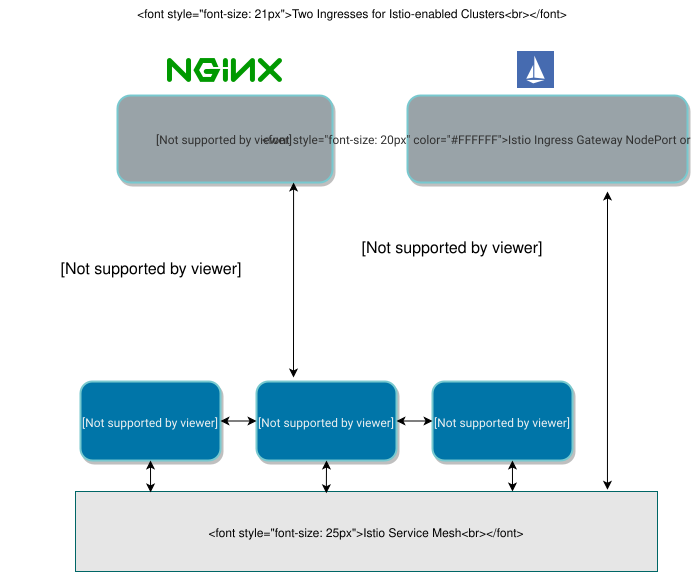

设置 Istio 网关
|
Rancher-Istio 自 Rancher v2.12.0 起已被弃用；请转向 SUSE 应用程序集合 版本的 Istio，以获得增强的安全性（包含在 SUSE Rancher Prime 订阅中）。 详细信息可以在 此公告 中找到。 |
每个集群的网关可以有自己的端口或负载均衡器，这与服务网格无关。默认情况下，每个 Rancher 提供的集群都有一个 NGINX 入口控制器，允许流量进入集群。
您可以在安装或未安装 Istio 的情况下使用 Nginx Ingress 控制器。如果这是您集群的唯一网关，Istio 将能够在服务之间路由流量，但 Istio 将无法接收来自集群外部的流量。
要允许 Istio 接收外部流量，您需要启用 Istio 的网关，它充当外部流量的代理。当您启用 Istio 网关时，结果是您的集群将有两个 Ingress。
您还需要为您的服务设置一个 Kubernetes 网关。此 Kubernetes 资源指向 Istio 对集群的入口网关的实现。
您可以通过负载均衡器将流量路由到服务网格，或使用 Istio 的 NodePort 网关。本节描述如何设置 NodePort 网关。
有关 Istio 网关的更多信息，请参阅 Istio 文档。

启用 Istio 网关
入口网关是将在您的集群中部署的 Kubernetes 服务。Istio 网关允许更广泛的自定义和灵活性。
-
单击 ☰ > 集群管理。
-
转到您创建的集群并单击*Explore*.
-
在左侧导航栏中，单击 menu:Istio[网关]。
-
点击*从Yaml创建*。
-
粘贴您的 Istio 网关 yaml，或 从文件读取。
-
单击*创建*。
*结果：*网关已部署，并将根据应用的规则路由流量。
示例 Istio 网关
在通过工作负载示例时，我们在服务中添加 BookInfo APP 部署。接下来，我们添加一个 Istio 网关，以便 APP 可以从集群外部访问。
-
单击 ☰ > 集群管理。
-
转到您创建的集群并单击*Explore*.
-
在左侧导航栏中，单击 menu:Istio[网关]。
-
点击*从Yaml创建*。
-
复制并粘贴下面提供的网关 yaml。
-
单击*创建*。
apiVersion: networking.istio.io/v1alpha3
kind: Gateway
metadata:
name: bookinfo-gateway
spec:
selector:
istio: ingressgateway # use istio default controller
servers:
- port:
number: 80
name: http
protocol: HTTP
hosts:
- "*"
---然后部署提供网关流量路由的 VirtualService：
-
单击 ☰ > 集群管理。
-
转到您创建的集群并单击*Explore*.
-
在左侧导航栏中，单击 menu:Istio[VirtualServices]。
-
复制并粘贴下面提供的 VirtualService yaml。
-
单击*创建*。
apiVersion: networking.istio.io/v1alpha3
kind: VirtualService
metadata:
name: bookinfo
spec:
hosts:
- "*"
gateways:
- bookinfo-gateway
http:
- match:
- uri:
exact: /productpage
- uri:
prefix: /static
- uri:
exact: /login
- uri:
exact: /logout
- uri:
prefix: /api/v1/products
route:
- destination:
host: productpage
port:
number: 9080*结果：*您已配置网关资源，以便 Istio 可以接收来自集群外部的流量。
通过运行以下命令确认资源是否存在：
kubectl get gateway -A结果应该类似于以下内容：
NAME AGE
bookinfo-gateway 64m从网页浏览器访问 ProductPage 服务
要测试并查看 BookInfo APP 是否正确部署，可以使用 Istio 控制器的 IP 和端口，以及您在 Kubernetes 网关资源中指定的请求名称，在网页浏览器中查看该 APP：
http://<IP of Istio controller>:<Port of istio controller>/productpage
要获取入口网关的 URL 和端口，
-
单击 ☰ > 集群管理。
-
转到您创建的集群并单击*Explore*.
-
在左侧导航栏中，点击 工作负载。
-
向下滚动到
istio-system名称空间。 -
在
istio-system中，有一个名为istio-ingressgateway的工作负载。在该工作负载的名称下，您应该看到链接，例如80/tcp。 -
单击其中一个链接。这应该会在您的网页浏览器中显示入口网关的 URL。将
/productpage附加到 URL。
*结果：*您应该在网页浏览器中看到 BookInfo APP。
有关检查 Istio 控制器 URL 和端口的帮助，请尝试 Istio 文档 中提供的命令。
查错
官方 Istio 文档 建议使用 kubectl 命令来检查外部请求的正确入口主机和入口端口。
确认 Kubernetes 网关与 Istio 的入口控制器匹配。
您可以尝试本节中的步骤，以确保 Kubernetes 网关配置正确。
在网关资源中，选择器通过其标签引用 Istio 的默认入口控制器，其中标签的键是 istio，值是 ingressgateway。 为了确保标签适合网关，请执行以下操作：
-
单击 ☰ > 集群管理。
-
转到您创建的集群并单击*Explore*.
-
在左侧导航栏中，点击 工作负载。
-
向下滚动到
istio-system名称空间。 -
在
istio-system中，有一个名为istio-ingressgateway的工作负载。单击此工作负载的名称，转到 标签和注释 部分。您应该看到它具有键istio和值ingressgateway。这确认了网关资源中的选择器与 Istio 的默认入口控制器匹配。